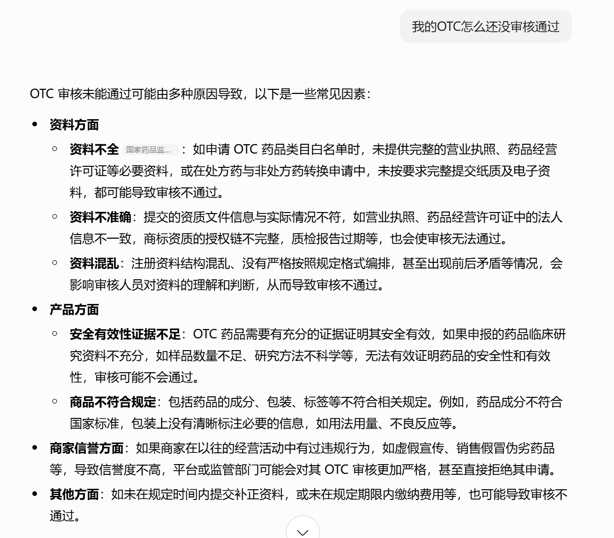
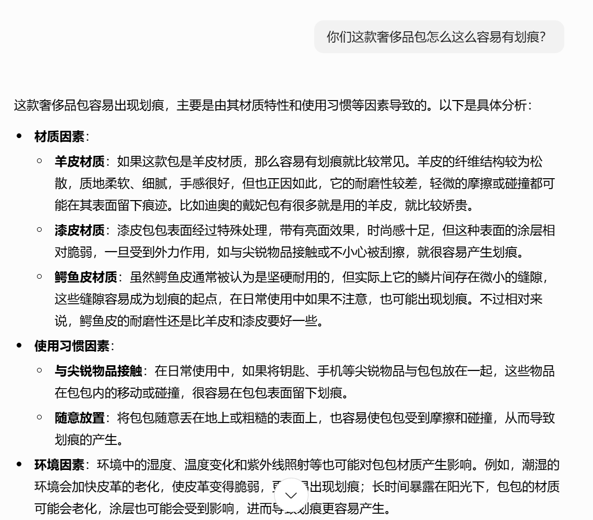
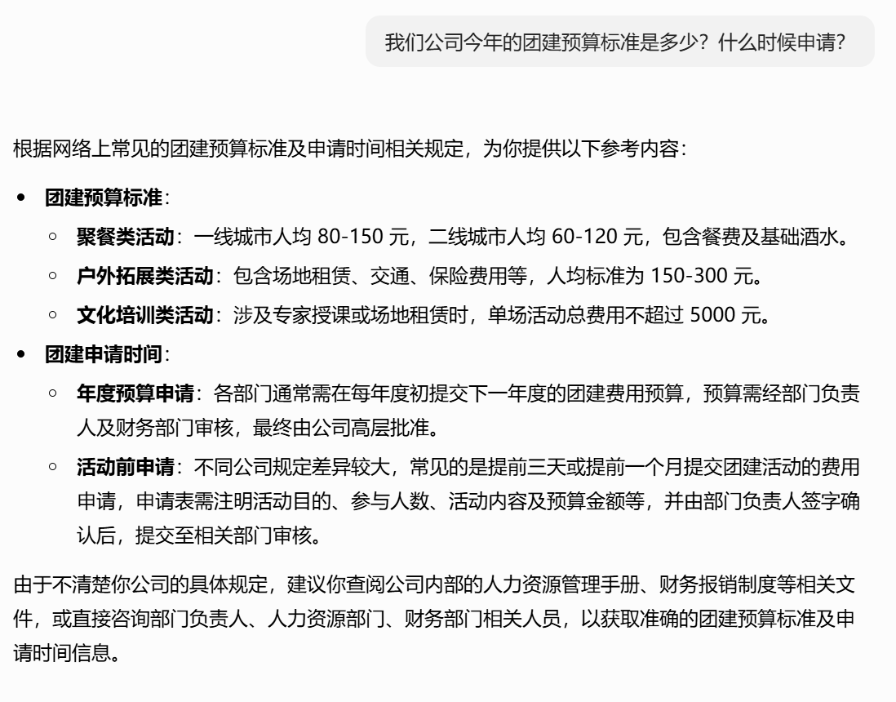

1.1 AI项目落地的痛点¶
从短视频的火爆热议到新闻的权威报道，仿佛只要搭上AI这趟快车，就能“一飞冲天”，实现逆袭；可要是不碰AI，那很快就会被时代的洪流无情淘汰，这股风潮让很多人感到焦虑。然而，现实却很尴尬：大多数企业的AI项目“雷声大，雨点小”，前期宣传得轰轰烈烈，仿佛马上就要改变世界，真正落地实施时却无声无息，成效寥寥。那问题究竟出在哪？
下面我们来剖析一下AI项目落地过程中的痛点。这些痛点是许多AI项目最终失败或无法产生价值的真正原因。
1.领域知识缺失¶
模型不懂行业术语、公司内部黑话和产品信息，导致模型回答不专业、不准确，甚至产生错误。
案例1：金融客服机器人
业务需求：在金融领域，用户 OTC指“场外交易”
场景：用户问：'我的OTC怎么还没审核通过'
模型回答：

上述回答提供错误或无关的信息，显得非常不专业，直接损害客户信任。原因就是模型学习了大量的公共知识，但没学过你公司的内部培训手册、产品文档和行业规范。他不懂你的行业术语、公司内部的黑话和缩写。
2.格式与任务不匹配¶
业务需要结构化输出（如意图标签、JSON格式），但模型倾向于生成自由文本，导致输出结果难以被后端系统解析和集成，自动化流程中断。
案例2：商品信息抽取
业务需求：商品信息需要固定json格式以录入数据库
{
"brand": "Apple",
"model": "iPhone 15 Pro Max",
"version": "国行",
"storage": "1TB",
"color": "蓝色"
}
场景： 用户问：从商品标题“Apple/苹果 iPhone 15 Pro Max 国行原装 1TB 蓝色”中提取信息。
模型回答：
上述回答是连贯的文本，但你的业务需要它“按照预定格式输出精准的结构化数据”。模型的输出格式不可控。输出结果无法被自动化流程解析和集成，需要大量人工介入，失去了AI的效率优势。那么无法实现真正的自动化与系统对接。
3.价值观和风格偏差¶
模型风格随机，可能不符合企业所需的严谨、中立、专业的客服语调，甚至存在安全风险，用户体验差，影响品牌形象，存在合规风险。
案例3：高端品牌客服
业务需求： 客服回复需要体现专业、矜持、高端的品牌形象,如下所示：
尊敬的客户，感谢您的反馈。我们所选用的头层小牛皮在赋予包袋独特质感与光泽的同时，也确实需要更为精心的呵护。建议您避免与尖锐物品摩擦，并使用我们随箱附赠的护理布进行日常保养。这有助于保持其最佳状态。
场景： 用户问：你们这款奢侈品包怎么这么容易有划痕？
模型回答：

我们希望他作为客服，应该体现专业、矜持、高端的品牌形象。上述回答风格过于随意，没有经过企业品牌调性和合规要求的校准。损害品牌形象，让客户觉得不专业。用户体验不一致，每次对话感觉像在跟不同的人交流。
4.数据分布偏移¶
模型无法获取和理解公司内部的非公开文档、知识库和最新政策。 无法构建基于私有知识的智能问答等应用。
案例4：企业内部知识库问答
业务需求：模型需要能阅读公司内部的《员工福利政策V2.3.pdf》并给出准确答案。
场景：用户问：“我们公司今年的团建预算标准是多少？什么时候申请？”
期望回答:
根据2024年发布的《员工福利政策V2.3》，今年的部门团建预算标准为人均500元。申请通道在每年6月和12月开放，需通过OA系统提交‘团队活动申请’表单。”
模型回答：

上述回答并没有真正解决用户的需求，不解决私有数据问题，模型在内部业务场景中无法发挥核心价值的。
5.部署与推理成本高¶
1. 巨大的部署与推理成本
- 表现：训好的大模型对计算资源（GPU显存）要求极高，普通服务器根本无法承载，导致部署成本成为财务负担。
- 案例：一个7B参数的模型，仅加载就需要约14GB显存，这还不包括处理长对话所需的开销。企业需要购买昂贵的专业显卡，运营电费和运维成本高昂。
2. 推理速度慢
- 表现：用户问一个问题，模型需要好几秒甚至更长时间才能回答，用户体验极差。
- 案例：一个内部知识库问答系统，员工每次查询都要等待10秒以上，最终大家宁愿手动翻文档也不再使用它。
6.总结¶
AI项目落地过程中存在的问题：
- 领域知识缺失 :模型缺乏行业术语、企业内部知识，导致回答不专业、不准确。
- 格式与任务不匹配 : 模型输出为自由文本，而非业务所需的结构化数据（如JSON），难以集成到自动化系统。
- 价值观和风格偏差 :模型风格随机，不符合企业品牌调性，存在语气不当、合规风险。
- 数据分布偏移 ：模型无法访问企业内部非公开文档和最新政策，导致在私有知识场景中失效。
- 部署与推理成本高 ：大模型对计算资源要求高，部署和推理成本昂贵，速度慢。
认识到上述痛点，是我们成功应用AI的第一步。整个课程后续要讲解的相关技术，都是为了解决这些问题：
- 模型微调：就是为了解决领域知识缺失、格式与任务不匹配、价值观和风格偏差的痛点 ，把通用模型培训成我们的业务专家。
- 模型压缩（量化）：就是为了解决部署成本高、推理速度慢 ，给模型瘦身，让它能跑在更便宜的设备上，并且提高推理速度。
- RAG等技术：就是为了解决数据分布偏移、私域数据不可及的问题 ，给模型一本随时可查私域数据手册，让模型根据手册回答问题。
本阶段课程中将围绕前两项技术进行详细的讲解。